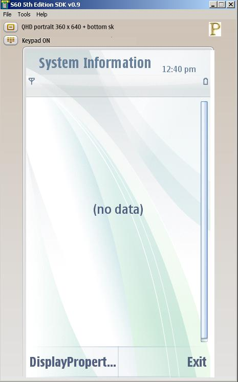
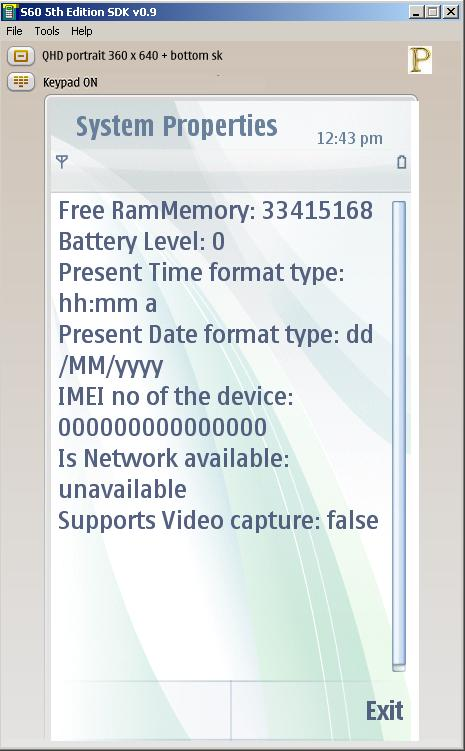

|
|||||||||
| PREV PACKAGE NEXT PACKAGE | FRAMES NO FRAMES | ||||||||
| Class Summary | |
|---|---|
| InfoClass | This is a class which extends Form class and displays the required properties. |
| SystemInfoMIDlet | SystemInfoMIDlet.java MIDlet can be used to test the System.getProperty API and its implemetation. |
|
|||||||||
| PREV PACKAGE NEXT PACKAGE | FRAMES NO FRAMES | ||||||||
This example demonstrates the Implementation of SystemProperty API .
1.Introduction
System Property Example MIDlet Applications is designed to run on S60_5th_Edition_SDK. It will be designed to as a developers take reference to create useful applications for particular SystemProperty API. It will be designed to let the testers to test this particular API. This example application demonstrate the usage of System.getproperty API.
NOTE: User has to sign the SystemProperty MIDlet to see the MobileInfo properties.
To get some device properties like
Device Free RamMemoryDevice Battery Levelusing "com.nokia.memoryramfree"
Device Present Time format typeusing "com.nokia.mid.batterylevel"
Device Present Date format typeusing "com.nokia.mid.timeformat"
Device IMEI nousing "com.nokia.mid.dateformat"
Device IMEI nousing "com.nokia.mid.imei"
Device Network availabilityusing "com.nokia.mid.imei"
Device Supports Video captureusing "com.nokia.mid.networkavailability"
using "supports.video.capture"
When the midlet is Started, The user is given with an option of 2 commands
1.DisplayProperties
2.Exit

As the user Clicks on the "Displayproperty" button all the information mentioned in the Use Cases will be displayed as shown below.

The User can use the Exit command to exit from the application.